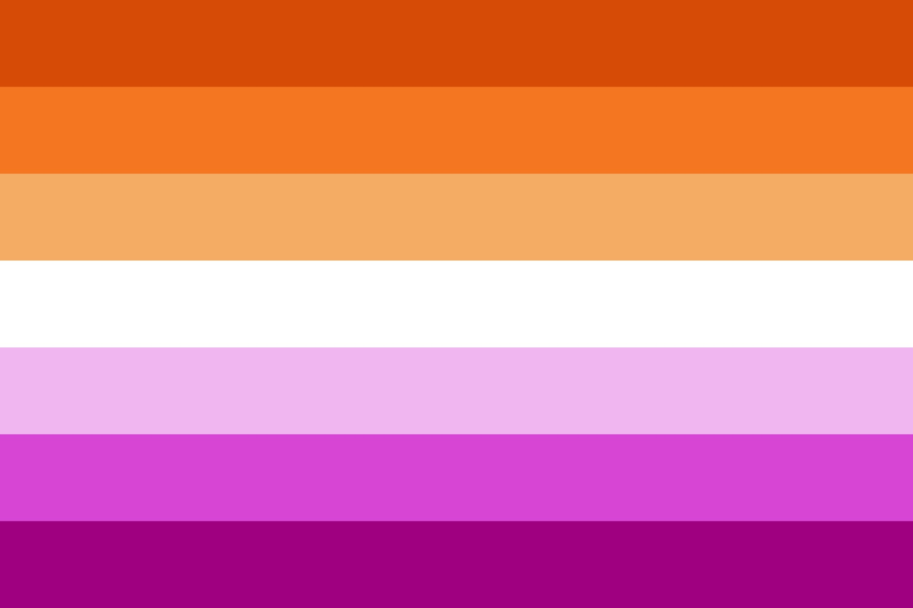
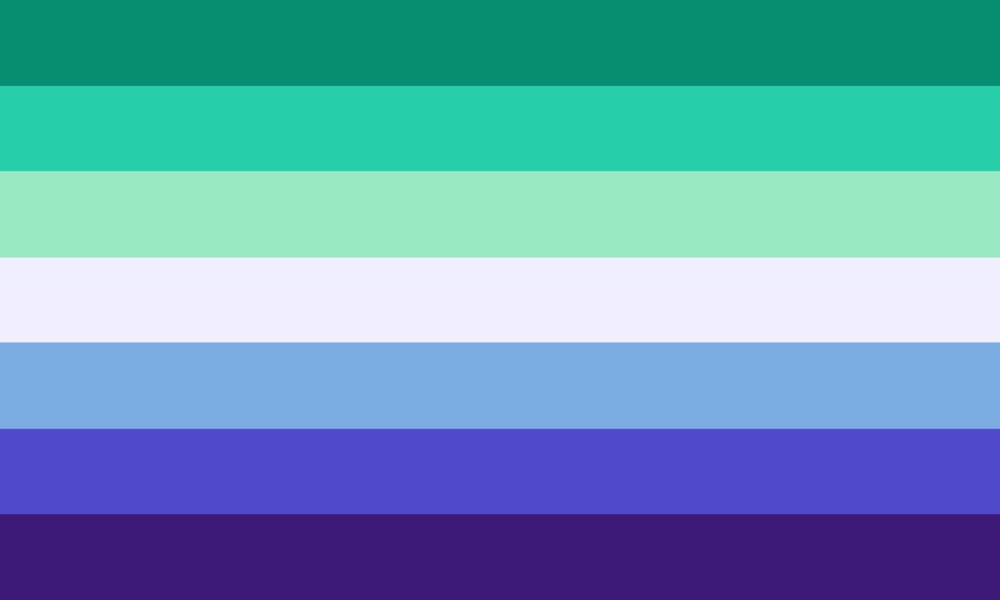
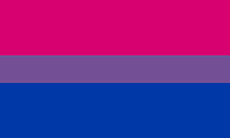
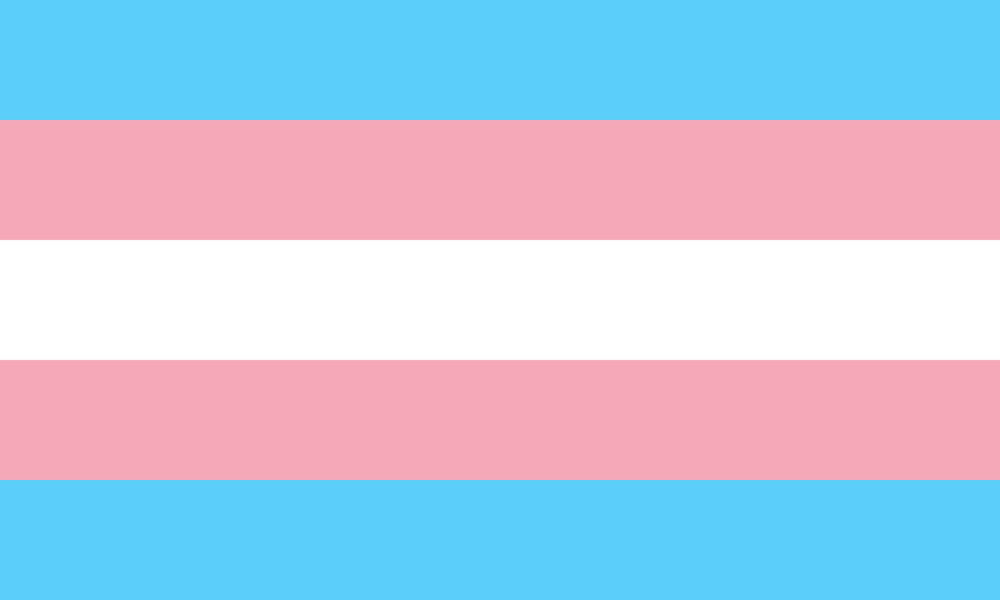
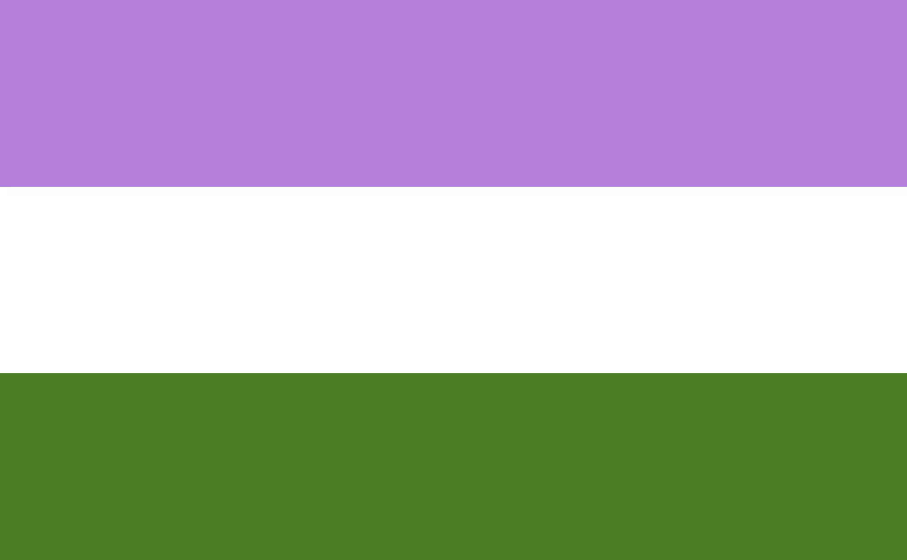
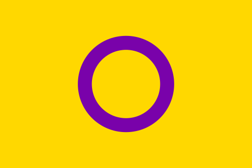
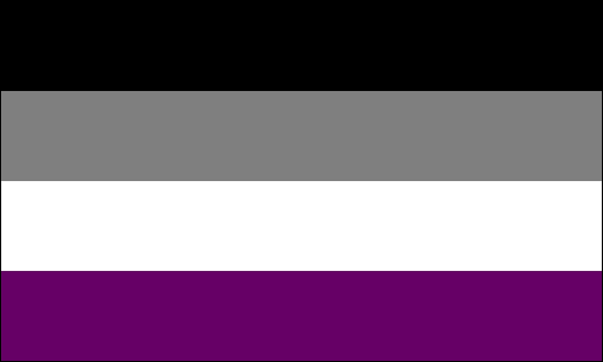
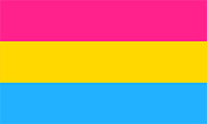
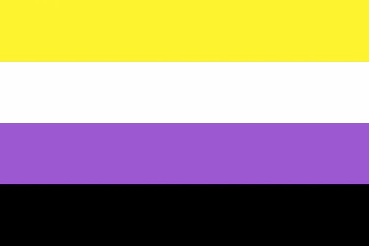

Sigla
Surgimento do LGBTQIA+
Por volta do ano 2000, o termo utilizado era GLS para representar os lgbtqia +, dando mais representatividade para os gays, lésbicas e simpatizantes. Mas em 2008 o termo ficou obsoleto e foi necessário criar uma nova sigla, foi então aprovado pela Conferência Nacional para debater os Direitos Humanos e Políticas Públicas, um novo termo que busca representar todas as orientações sexuais e identidades de gênero.
Significado da sigla LGBTQIA+
Que o movimento social LGBTQIA+ vem de uma longa estrada de luta e vitórias memoráveis todos nós já sabemos, mas você sabe o que cada letrinha dessas significa? Aqui você vai poder encontrar melhores informações sobre essas letras e entender melhor para poder ajudar a repassar a mensagem de respeito e direito à liberdade de ser quem você quiser ser!
Bandeiras do Orgulho
|  | Lésbicas (L)
São mulheres cis e trans que sentem atração física, emocional e sexual por outras mulheres (cis/trans). |
|  | Gays (G) São homens cis e trans que sentem atração física, emocional e sexual por outros homens (cis/trans). |
|  | Bissexuais (B) Pessoas que se identificam-se como bissexuais sentem atração física, emocional ou sexual por mais de um gênero. |
|  | Transgêneros e Travestis (T) Transgeneridade não se diz respeito à orientação sexual da pessoa, mas tem relação com o gênero dela. Pessoas transgêneros não se identificam com o gênero de nascença. Já “trans” - de origem latina, significa “além de”- foi a primeira forma de se referir a travestis e “vestire” - também vindo do latim - passou a completar a expressão de modo a indicar “pessoas que exageram nas roupas”. Rapidamente a palavra se popularizou de modo que é utilizada até os dias atuais. |
|  | Queer (Q) É um termo utilizado para pessoas que enxergam sua sexualidade de uma forma livre não somente cis/trans/ e/ou, bi ou homo. A palavra “queer” vem de origem inglesa que significa “estranho” e isso deu o nome ao Queer Street um lugar onde pessoas discriminadas pela sociedade frequentavam. A palavra foi criada com o intuito de ofender, mas acabou que o grupo aderiu de forma que todos aqueles que se identificassem tivessem uma forma de se sentirem representados. |
|  | Intersexo (I) São pessoas que nascem com características sexuais biológicas que não se encaixam nos padrões físicos de feminino ou masculino. |
|  | Assexual (A) São pessoas que não sentem atração sexual por pessoas, mas podem sentir atração afetiva. |
| Arromântico (A) São pessoas que têm pouco ou nenhum interesse, desejo ou experiência de atração romântica por outras pessoas. |
|  | Pansexual (P) São pessoas que se atraem ou desenvolvem sentimentos por outras pessoas e o gênero não é relevante nesse processo. |
 |
Polisexual (P) São pessoas que sentem atração por múltiplos gêneros, mas não necessariamente todos eles. |
|  | Não-binário (N)
São pessoas cujo a identidade e a expressão de gênero não são limitadas ao masculino e feminino. |
No menu localizado no cabeçalho você pode encontrar publicações sobre cada letra da sigla
Visitar o menu ▲
Calendário dias do orgulho e visibilidade LGBTQIA+
clique na imagem para acessar a publicação do Coletivo Matheusa Passarelli